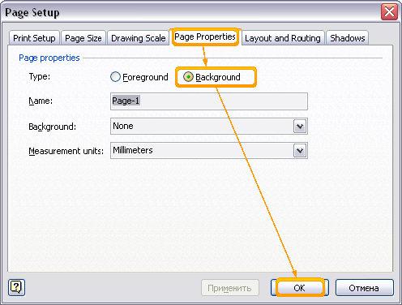
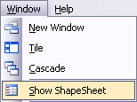

Почти конфиденциально в Visio 2003.


Почти конфиденциально в Visio 2003.
 Защита документа представлена в Visio скупо. Вернее защиты нет как таковой. Есть только защита некоторых свойств документа, стилей. Но в самом простом случае её можно отключить. Итак, как же защитить свой документ? Причем еще сделать это лучше так, чтобы человек мог только просмотреть документ или распечатать и еще надпись во весь экран «Конфиденциально». Да, для этих целей подойдет PDF. Но ведь после преобразования в PDF редактировать документ можно только в этом самом reader’е. Да и вообще, отсутствие средств к защите документа раньше решалась просто, сохранением в графическом формате. Графический формат лучше всего подходит для пересылки по почте всяких чертежей. Для черно-белых лучше всего подходит PNG или TIFF, но дальше, дело вкуса.
Защита документа представлена в Visio скупо. Вернее защиты нет как таковой. Есть только защита некоторых свойств документа, стилей. Но в самом простом случае её можно отключить. Итак, как же защитить свой документ? Причем еще сделать это лучше так, чтобы человек мог только просмотреть документ или распечатать и еще надпись во весь экран «Конфиденциально». Да, для этих целей подойдет PDF. Но ведь после преобразования в PDF редактировать документ можно только в этом самом reader’е. Да и вообще, отсутствие средств к защите документа раньше решалась просто, сохранением в графическом формате. Графический формат лучше всего подходит для пересылки по почте всяких чертежей. Для черно-белых лучше всего подходит PNG или TIFF, но дальше, дело вкуса.
Но иногда все же возникала необходимость отправки чертежей в векторном формате. Тоже есть решение, импортирование в метафайл в Word.
Ну да ладно. Есть Visio, и с его помощью и будем решать эту задачу. Открываем Visio, рисуем что-либо и пытаемся это защитить.

Сначала создаем страницу по шаблону текущей.(Insert>New Page...)

Потом делаем страницу с фигурами фоновой.(File>Page Setup...>Page properties>Type>Background)

Настраиваем фоновую страницу как фон к основной.(File>Page Setup...>Page properties>Background>Page-1)

И скрываем фоновую из возможности выбора страниц. Для этого входим в TаблицуФигур(ShapeSheet) страницы Page-1, т.е. фоновую страницу и в разделе Page Properties в ячейку UIVisibility вносим 1.


Пока еще активное окно принадлежит странице с фигурами, но стоит переключится на другую страницу, как выбрать фигуры и что-либо с ними сделать не получится.
Что получилось? Получилось, что есть одна единственная страница, на которой нельзя ничего выделить, можно чертить поверх данных фигур, распечатывать, и более ничего. Можно еще удалить все мастера документа, если есть интересные. :-)
Но раз есть способ все это скрыть, значит должен существовать способ все это вернуть обратно. Через интерфейс пользователя этого сделать не получится и в этом случае можно рассматривать как «плюс». Нужен макрос.
Вызываем окно редактора Microsoft Visual Basic, либо через меню (Tools>Macros>Visual Basic Editor), либо комбинацией клавиш Alt+F11. Затем в редакторе выбираем документ(ThisDocument) и двойным нажатием на нем открываем окно редактора. Далее в это окно вносим код.
Sub Test()
i = ThisDocument.Pages.Count
For k = 1 To i
ThisDocument.Pages.Item(k).PageSheet.CellsSRC(visSectionObject, visRowPage, visPageUIVisibility).FormulaU = "0"
Next k
End Sub

Данный макрос ставит 0 в ячейку невидимости всех страниц.
Можно конечно и все сделать по другому. Сделать слой, потом защитить его или еще как-нибудь, но дело в том, что вернуть это все можно тоже использую интерфейс пользователя, стандартный интерфейс. В данном же случае надо знать, что есть фоновая страница, надо знать, что их можно скрывать и вообще глубоко разбираться в вопросе. Т.е. в сущности надо хорошо знать Visio да и еще VBA немного знать. Так что данный тип защиты подойдет для большинства пользователей Visio. Для пущей сложности, можно комбинировать информацию на основной странице с фоновой, если конечно в этом есть смысл. Иначе выльется это все в головную боль.
Советы по работе с программой
- Чтобы в дальнейшем вас не беспокоило окно наличия макросов в документе, просто удалите их. Странный совет, однако это так. Если вы удалили все модули из документа, а окно все равно появляется, значит надо зайти в ThisDocument, нажать Ctrl+A и затем Delete. После этого не закрывая окна сохраните документ средствами Visual Basic Editor'а. Окно о наличии макросов в документе более не будет появляться.
- Простое объединение одной фигуры удаляет с него все соединительные точки. Легко и просто.
- Мульти-мастер. Если в мастере создать 2-3 группы, и в образе удалить одну из них, скажем группу А, то если внести новую фигуру в группу А мастера, в образе её не будет! Достаточно сложный механизм для понимания, однако с помощью этого простого правила можно создавать 2! и более различных образов одного мастера с возможностью последующего раздельного редактирования.

Статьи: 1 2 3 4 5 6 7 8 9 10 11 12 13 14 15 16 17 18 19 20 21 22 23 24 25 26 27 28 29 30
В начало раздела
Автор: Ничков Алексей (a.k.a. Digitall)